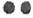

Dentro de esta sección maya encontrarás información de sus calendarios,
meditaciones, y ejercicios diversos para el despertar de la conciencia.
Para profundizar los conocimientos acerca de los mayas, su historia y
calendario les recomiendo la lectura de mis libros:
Calendario Maya: La cuenta Sagrada del Tiempo
Calendario Maya 2: el Viaje en el Tiempo
Conciencia Maya: Vivir como un Ser de Tiempo
Profecías de Aborígenes americanos, 2012 y más allá
¿Quiénes son los mayas?
Comencemos por analizar el término maya, esta palabra es hindú y significa
“mundo de ilusión” o “el origen del mundo” en sánscrito significa “magia”,
“mente”, “grande” y también “madre”. La palabra Maya estuvo muy presente en
el oriente planetario ya que la madre de Buda se llamaba maya. En el libro
de los Vedas llamado Mahabharata, maya era el nombre de un eminente
astrólogo – astrónomo, mago y arquitecto, y también era el nombre de una
gran tribu de navegantes erráticos.
También en Egipto encontramos la palabra maya, ya que el tesorero del
faraón ...
Tutankhamon, se llamaba maya. En la filosofía egipcia encontramos un
término similar a maya que es Mayet y significa orden universal del mundo.
En la mitología griega Maya es una de las siete estrellas del multisistema
estelar de las pléyades, de hecho es la estrella más brillante de ese grupo
estelar.
También actualmente de alguna manera el término maya anualmente está
presente para los humanos ya que el nombre del mes mayo fue puesto en honor
a la diosa romana Maia diosa de la primavera. Para el occidente maya se
deriva de la palabra mayab término que describe a la península de Yucatán
en Méjico.
En la actualidad estudiosos del mundo maya, dicen que los mayas fueron
mucho más que un pueblo que habitó centro América, afirman que esta cultura
es extraterrestre y que aparece en distintas épocas de un planeta para dar
a la humanidad herramientas para el despertar de conciencia. Más allá de
sus orígenes es indudable que su desarrollo intelectual, espiritual y
artístico era muy grande. Sus ciudades están distribuidas por Méjico,
Guatemala, El Salvador, todas dotadas de templos, pirámides escalonadas,
centros ceremoniales, todo decorado con un toque de exquisitez artística.
El gran misterio maya es ¿por qué estuvieron tan poco tiempo en la Tierra y
adonde se fueron? ¿Qué pasó con su civilización?.
Se destacaban en matemáticas y desarrollaron alrededor de veinte
calendarios diferentes. A pesar de que en algunos libros de historia se
dice que no habían logrado usar la rueda para sus traslados, era obvio que
la forma de la rueda la conocían ya que la usaban en sus aros del juego de
pelota, en sus calendarios circulares, en la construcción de algunos
observatorios.
Los mayas fueron tan avanzados que calcularon la longitud de la revolución
terrestre en torno al sol y el número que ellos obtenían tiene una
diferencia de una milésima de un punto decimal con los cálculos de la Nasa.
La pregunta sería ¿con qué instrumentos científicos contaban para tener
semejante precisión? Además ellos calcularon las revoluciones de todos los
planetas de nuestro sistema solar.
Tenían registros de acontecimientos que son tan pasados que se los podría
considerar futuros. Si observamos los códices que dejaron, bueno los pocos
que subsistieron a la invasión, nos damos cuenta de la profunda sabiduría
que tenían y que desarrollaron en la Tierra en tan poco tiempo.
¿Y las profecías mayas? Cuánta precisión en el pasaje de los cometas, en
los eclipses, en comienzos y cierres de ciclos.
Siempre me pregunté “¿y qué pasa con todo los que nos contaron acerca de
los sacrificios humanos que hacían?”, y tengo mis serias dudas que
realmente sea tal cual lo cuentan los libros de historia, además de
entender que no se puede tomar como referencia las expresiones pictóricas
porque quizás contengan un sentido más allá de la imagen. Si vinieran seres
del futuro y observaran una estampita del Sagrado Corazón de Jesús, ¿que
pensarían, que los humanos cortaban el pecho de otros seres, les sacaban el
corazón, lo envolvían con espinas y encima le prendían fuego?. No podemos
asegurar que sus pinturas nos están mostrando lo que manifestaban en
realidad.
Desde hace unos años, para ser más precisos desde la Convergencia Armónica
que sucedió el 16 y 17 de agosto de 1987, está sucediendo un re despertar
de la cultura maya, es tiempo de percibir la presencia espiritual maya.
Ellos sabían que existiría un tiempo desde 1987 hasta el 2012 de gran
oportunidad de despertar, y por eso dejaron señales en sus pirámides,
esculturas y calendarios.
Debido a que ellos pudieron realizar tantas cosas con tan pocos medios, los
mayas tienen algo muy importante que enseñarnos en nuestro tiempo de crisis
tecnológica y cambio paradigmático.
Cuenta Sagrada del Tiempo
Desde 1992 se está difundiendo ampliamente el uso del calendario Tzolkin
que es una de sus tantas cuentas sagradas, este sincronario, esta cuenta
del tiempo mal llamada calendario y digo mal llamada porque la palabra
calendario deriva de calendas que era un libro utilizado por los romanos
para llevar las cuentas de los impuestos del pueblo, es una cuenta anual.
Este período anual comienza el día 1 de la luna magnética del murciélago
que si lo correlacionamos con el gregoriano que aún se sigue utilizando
para medir el tiempo a nivel mundial, sería el 26 de julio de cada año. ¿Y
por qué comienza ese día y no otro?, bueno lo que sucede en la cuenta maya
siempre tiene que ver con la naturaleza y ese día se alinean el sol central
de la galaxia llamado Hunab Ku, la estrella Sirio, nuestro sol llamado
Kinich Ahau, y el planeta Tierra exactamente a 19º 5’ latitud norte en
donde se encuentra la pirámide del sol en Teotihuacan Méjico.
La energía de la luz unificada ancla en la pirámide del sol y desde allí a
través de la red de pirámides del planeta descubiertas y ocultas aún, la
luz se expande de manera radial por la tierra. Cada año o ciclo solar tiene
una misión que ese día llega a cada ser como una chispa de luz que contiene
la información de aquello que vibrara ese año.
El año concluye el día 28 de la luna cósmica de la Tortuga que
correlacionándolo con el gregoriano sería el 24 de julio de cada año, y
este ciclo anual se divide en trece períodos de 28 días cada uno, lo cual
nos da una cifra de 364 días.
El día 25 de julio es considerado día de pausa, día de paz interplanetaria,
y es llamado “Día Fuera del Tiempo”, estamos hablando del tiempo medido. Es
un día de meditación, de agradecimiento, de arte, de vaciamiento, entrega y
celebración, todo esto para estar en un estado de apertura y armonía para
la recepción al día siguiente de la energía del año que comienza.
Un ciclo solar contiene trece lunaciones o meses lunares, los cuales
constan de cuatro semanas de siete días cada una. Dijimos que cada año
tiene una misión, y dentro de esta misión anual se mueven trece acciones
misionales que tienen que ver con el año. Veamos un poco como es esto:
Luna magnética del murciélago ( desde el 26/7 al 22/8)
Su acción es de Atracción, unificación, proyección de metas y objetivos,
luna de armado de los propósitos anuales.
Luna lunar del escorpión ( desde el 23/8 al 19/9)
Su acción es de observación en los desafíos que pudieran presentarse para
el logro de los propósitos. Tiempo de búsqueda de la estabilidad entre los
extremos y polaridades.
Luna eléctrica del venado ( desde el 20/9 al 17/10)
Su acción es de servicio y activación de los propósitos. Luna de reuniones
desde la igualdad.
Luna autoexistente de la lechuza ( desde el 18/10 al 14/11)
Su acción es de cambios, de búsqueda de formas, de definiciones y
decisiones que tienen que ver con los propósitos del año.
Luna entonada del pavo real ( desde el 15/11 al 12/12)
Su acción es de comando, tomando el poder de actuar y entregándolo a otros
seres para que accionen también.
Luna rítmica del lagarto ( desde el 13/12 al 9/1)
Su acción es de organización, desde el equilibrio y la igualdad.
Luna resonante del mono ( desde el 10/1 al 6/2)
Su acción es de apertura y canalización, de sintonía entre mente y
percepción, entre sentimiento y acción.
Luna galáctica del halcón ( desde el 7/2 al 6/3)
Su acción es de integración y búsqueda de la armonía. Se modela el
propósito del año.
Luna solar del jaguar ( desde el 7/3 al 3/4)
Su acción es de producción y realización, los propósitos se comienzan a
trabajar profundamente.
Luna planetaria del perro ( desde el 4/4 al 1/5)
Su acción es de perfeccionamiento de lo que ya viene en movimiento desde el
comienzo del año. Luna de manifestación de la perfección.
Luna espectral de la serpiente ( desde el 2/5 al 29/5)
Su acción es de liberación de todos los obstáculos que no permiten aún el
fluir del propósito o meta del año.
Luna cristal del conejo ( desde el 30/5 al 26/6)
Su acción es de cooperación, obrar en equipo para lograr el propósito del
año.
Luna cósmica de la tortuga ( desde el 27/6 al 24/7)
Su acción es de trascendencia, todo lo que se propuso se logra y se suelta,
para estar listos para una nueva energía en el próximo ciclo solar.
Esta cuenta de las lunaciones sigue un orden cíclico, el ciclo de 365 días
que la tierra transita alrededor del sol para llegar al mismo punto, lo que
llamamos año. A su vez, las 13 veces que la luna hace su giro dentro del
año solar, los meses lunares dentro del año, son ciclos dentro del ciclo
solar. Esto muestra el movimiento de ciclos dentro de ciclos.
Hay otra cuenta que sincroniza con la anterior, y es la cuenta galáctica
que corresponde al orden sincrónico, que combina los veinte sellos sagrados
solares, con los trece tonos musicales lunares.
Los veinte sellos son pulsaciones del gran sol central, son emanaciones del
fuego sagrado, veamos la esencia de cada uno de ellos. Los sellos
determinan la misión de cada día y de cada persona.
Los números que están a la izquierda de los sellos, son códigos de cada
sello, simbolizan el número de tribu. No confundir con los tonos.
Sol
El sello del sol representa la luz, el fuego sagrado. Este sello nos nutre
de vitalidad y energía. Representa el principio y el fin. Por eso su número
de código es cero o veinte.
Dragón
El sello del Dragón representa el nacimiento, y la memoria cósmica de la
vida. El dragón es una introspección hacia el ser interno.
Viento
El sello del viento representa el poder espiritual que se hace presente
gracias al verbo sagrado. El viento es comunicación.
Noche
El sello de la noche representa la abundancia, los sueños, la intuición. Da
la posibilidad de encontrar las oscuridades más profundas para sanarlas.
Semilla
El sello de la semilla representa la vida, y el florecimiento. La semilla
nos da expansión.
Serpiente
El sello de la serpiente representa a la fuerza vital. La serpiente vive
por encima de lo común para seguir su elevación.
Enlazador de Mundos
El sello del Enlazador de mundos representa la muerte. La gran
trascendencia de cambiar de un estado a otro. Hace enlaces entre seres,
situaciones y estados.
Mano
El sello de la mano representa el conocimiento que cura y la realización,
la concreción en la forma.
Estrella
El sello de la estrella representa el arte, la elegancia y la armonía del
ser. La estrella nos abraza con su brillo.
Luna
El sello de la Luna representa la fluidez, la maternidad, la emoción y la
contención. La luna es sumamente perceptiva.
Perro
El sello del perro representa el amor incondicional, la lealtad. La
fidelidad hacia uno mismo. Es todo sentimiento y percepción.
Mono
El sello del mono representa la alegría, la risa, el teatro como medio a la
alquimia, a la transformación del ser.
Humano
El sello del humano representa el libre albedrío, la sabiduría y el
respeto.
Caminante del Cielo
El sello del caminante del cielo representa la exploración de los espacios
y la unión del cielo y la tierra. Es defensor de la verdad y gran
protector.
Mago
El sello del mago representa la atemporalidad, la receptividad. Su magia es
la del tiempo real que permite estar en contacto con todas las realidades.
Águila
El sello del águila representa la creación de nuevas visiones que permiten
el vuelo del alma. El águila es la mente planetaria.
Guerrero
El sello del guerrero representa la inteligencia superior. El guerrero es
valiente, intrépido y utiliza sus herramientas de paz y luz para un mundo
mejor.
Tierra
El sello de la Tierra representa la evolución planetaria. Es la pulsación
del corazón del planeta.
Espejo
El sello del espejo representa el orden natural del tiempo, es reflejo
viviente que vive mostrando aquello que tiene que ser visto. El espejo es
eternidad.
Tormenta
El sello de la tormenta representa la auto generación, la transformación
acelerada, la tormenta es la revolución que limpia.
Tonos sagrados lunares
Los tonos marcan las acciones a ejercer en la misión de cada día y de cada
persona.
Tono 1 magnético
El tono uno toma la acción de unificar, atraer, convocar, fijar metas,
propósitos y objetivos.
Tono 2 lunar

El tono dos toma la acción de polarizar, mostrando los extremos que trae la
dualidad, para encontrar la estabilidad.
Tono 3 eléctrico
El tono tres toma la acción de reunir, y activar el servicio.
Tono 4 auto existente
El tono cuatro toma la acción de decidir, hacer los cambios necesarios para
dar nuevas formas. Auto existe.
Tono 5 entonado

El tono cinco toma la acción de comandar, de ejercer el poder amorosamente
y compartiéndolo.
Tono 6 rítmico
El tono seis toma la acción de organizar, y encontrar el equilibrio y la
igualdad.
Tono 7 resonante

El tono siete toma la acción de canalizar, sintonizando la fuente divina.
Da apertura.
Tono 8 galáctico
El tono ocho toma la acción de modelar, armonizando, buscando caminos de
integración.
Tono 9 solar
El tono nueve toma la acción de producir, realizar, concretar.
Tono 10 planetario
El tono díez toma la acción de perfeccionar y manifestar.
Tono 11 espectral
El tono once toma la acción de disolver liberando, y divulgando.
Tono 12 cristal
El tono doce toma la acción de la cooperación universalizando todo.
Tono 13 cósmico
El tono trece toma la acción de trascender hacia nuevas metas. Permite dar
el salto hacia otra octava.
Veamos ahora como encontrar la misión de cada día y de cada persona en el
orden sincrónico. Con una fecha completa día, mes y año hacemos la búsqueda
siguiente:
1) buscar el año en tabla A y anotar en un papel el número que está a la
derecha
2) buscar en tabla B el mes y día y el número que está debajo sumarlo al
anterior. Si el resultado da un número mayor que 260 entonces le resto 260.
3) el resultado final lo busco en la tabla C y allí encontraré la misión
descrita como sello y tono. Busco en la información detallada anteriormente
para determinar misión y acción.
Daré dos ejemplos
a) fecha 23 de agosto de 1979, busco en tabla A y el número es 233, ahora
busco en tabla B agosto 23 o sea 8/23 y el número que está debajo es 29.
Sumo 233 mas 29 y me da 262, este número supera las misiones que son 260
entonces le resto 260 y el resultado final es 2.
Busco en tabla C y el kin 2 es viento dos ya que la anotación de dos puntos
es dos. La misión es la del viento lunar blanco, entonces leo el sello del
viento y el tono dos.
b) fecha 25 de julio de 1989, busco el año en tabla A y es 243. Busco ahora
la fecha, atención porque se trata del día fuera del tiempo y está abajo de
todo en la tabla B y el número es 260. En este ejemplo no lo sumamos porque
luego tendríamos que restarlo. El número resultado es entonces 243, ahora
buscamos en tabla C kin 243 y la misión es la de la noche 9.
Ya que el kin 243 está en la fila del sello de la noche y tiene el tono 9.
Noche solar azul.
Es muy simple, solo es cuestión de práctica que nos ayuda a vibrar con el
tiempo real natural.
BUSCA LA MISIÓN DE CADA DIA, BUSCA TU MISIÓN DE VIDA
Tablas A y B
Tabla C
Para profundizar los conocimientos acerca de los mayas, su historia y
calendario les recomiendo la lectura de mis libros:
Calendario Maya: La cuenta Sagrada del Tiempo
Calendario Maya 2: el Viaje en el Tiempo
LAS SIETE PROFECÍAS MAYAS
Los mayas dejaron a los habitantes del planeta tierra de hoy, un mensaje
escrito en piedra, un mensaje que contiene siete profecías, una parte de
alerta y una parte de esperanza, el mensaje de alerta profetiza sobre lo
que va a pasar en estos tiempos que vivimos, el mensaje de esperanza nos
habla sobre los cambios que debemos de realizar en nosotros mismos para
impulsar la humanidad hacia la nueva era. La era de mujer, la era de la
madre, la era de la sensibilidad.
Cada día hay más erupciones volcánicas, la polución generada por nuestra
tecnología se ha vuelto alarmante, hemos debilitado la capa de ozono, que
nos protege de las radiaciones del sol, hemos contaminado al planeta con
nuestros desechos industriales y basuras, la devastación de los recursos
naturales esta acabando con la fuentes de agua con el aire que respiramos,
el clima ha cambiado y las temperaturas han aumentado de manera
impresionante.
Nos amenaza el caos informático, la pobreza generalizada por los efectos
del caos económico se siente en casi todos los países del mundo todos
buscamos respuestas y un camino seguro para los tiempos que vivimos
reconocemos a partir de los problemas que enfrentamos a diario que no
estamos viviendo en armonía muchas religiones elaboraron profecías acerca
de lo que está pasando, la Biblia anunció que cuando todos estos hechos
sucedieran al mismo tiempo estarían llegando los tiempos del Apocalipsis.
Los Mayas sabían que esto iba a suceder exactamente en estos tiempos, por
eso dejaron unas guías para que cada uno de nosotros de manera individual
contribuya llevar a la humanidad hacia el amanecer de la galaxia, a una
nueva a era en que no habrá más caos ni destrucción, nos dejaron siete
profecías en las que hablan de sus visiones de futuro, de nuestro presente
están basadas en las conclusiones de sus estudios científicos y religiosos
sobre el funcionamiento del universo.
A continuación les comparto una síntesis de cada una, si es de su interés,
pueden profundizar sobre las mismas en mis siguientes libros:
Profecías de Aborígenes americanos, 2012 y más allá. Editorial Kier
Calendario Maya: La cuenta Sagrada del Tiempo. Editorial Kier
Calendario Maya 2: el Viaje en el Tiempo. Editorial Kier
Conciencia Maya: Vivir como un Ser de Tiempo. Editorial Kier
1° Profecía Maya.
La primera profecía habla del final del miedo dice: "que nuestro mundo de
odio y materialismo terminará el sábado 22 de diciembre del año 2012,
(tiempo que ha venido acortándose por la misma aceleración del tiempo y
esto da lugar a que dichos sucesos ocurran antes de esta fecha, unos 4 o 5
años antes) que para ese día la humanidad deberá escoger entre desaparecer
como especie pensante que amenaza con destruir el planeta o evolucionar
hacia la integración armónica con todo el universo, comprendiendo que todo
está vivo y consciente, que somos parte de ese todo y que podemos existir
en una nueva era de luz”.
Los Mayas sabían que nuestro sol (ellos le llamaban kinich-Ahau ) es un ser
vivo que respira y que cada cierto tiempo se sincroniza con el enorme
organismo en el que existe, que al recibir un chispazo de luz del centro de
la galaxia brilla mas intensamente, produciendo en su superficie lo que
nuestros científicos llaman erupciones solares y cambios magnéticos, ellos
dicen que esto sucede cada 5.125 años, que la tierra se ve afectada por los
cambios en el sol mediante un desplazamiento de su eje de rotación,
predijeron que a partir de este movimiento se producirían grandes
cataclismos, para los mayas los procesos universales como la respiración de
la galaxia son cíclicos y nunca cambian, lo que cambia es la conciencia del
hombre que pasa a través de ellos, siempre en un proceso hacia más
Perfección.
La primera profecía anunció que siete años después del comienzo del último
Katun es decir en 1999 comenzaría una época de oscuridad que nos
enfrentaría a todos con nuestra propia conducta dijeron que las palabras de
sus sacerdotes serían escuchados por todos nosotros como una guía para
despertar ellos llaman a esta época como el tiempo que la humanidad entrará
al gran salón de los espejos, una época de cambios para enfrentar al hombre
consigo mismo para hacer que entre al gran salón de los espejos y se mire,
que mire y analice su comportamiento con el mismo, con los demás, con la
naturaleza y con el planeta en donde vive.
Una época para que toda la humanidad por decisión consciente de cada uno de
nosotros decida cambiar eliminar el miedo y la falta de respeto de todas
nuestras relaciones.
2° Profecía Maya
La segunda profecía maya anunció que el comportamiento de toda la humanidad
cambiaría rápidamente a partir del eclipse de sol del 11 de agosto de 1999,
aquel día vimos como un anillo de fuego se recortaba contra el cielo, fue
un eclipse sin precedentes en la historia, por la alineación en cruz
cósmica con centro en la tierra de casi todos los planetas del sistema
solar, se posicionaron en los cuatro signos del zodiaco, que son los signos
de los cuatro evangelistas, los cuatro custodios del trono que protagonizan
el Apocalipsis según San Juan. Además la sombra que proyecta la luna sobre
la tierra atravesó Europa pasando por Kosovo, luego por Medio Oriente, por
Irán e Irak y posteriormente se dirigió a Pakistán e India, con su sombra
parecía predecir un área de guerras y conflictos.
Simultáneamente más personas encontraran la paz, aprenderán a controlar sus
emociones habrá más respeto, serán mas tolerantes y compresivas y
encontraran la unidad, surgirán hombres con un altísimo nivel de energía
interna, personas con sensibilidad y poderes intuitivos para la sanación,
pero también aparecerán farsantes que solo pretenderán tener rédito
económico a expensas de la desesperación ajena, los mayas predijeron que en
1999 comenzaría la era del tiempo del no-tiempo una etapa de cambios
rápidos necesarios para renovar los procesos ideológicos sociales y
humanos.
Esto implica que el cielo y el infierno se estarán manifestando al mismo
tiempo, y que cada ser humano vivirá en el uno o en el otro dependiendo de
su propio comportamiento, el cielo con la sabiduría para trascender
voluntariamente a todo lo que sucede, el infierno con la ignorancia para
aprender con sufrimiento, dos fuerzas inseparables una que comprende que en
el Universo todo evoluciona hacia la perfección, que todo cambia, otra
envuelta en un plano material que solo alimenta el egoísmo.
3° Profecía Maya
La tercera profecía maya dice que una ola de calor aumentará la temperatura
del planeta, produciendo cambios climáticos geológicos y sociales en una
magnitud sin precedentes, y a una velocidad asombrosa, los mayas dicen que
el aumento de la temperatura se dará por la combinación varios factores,
uno de ellos generados por el hombre que en su falta de sincronía con la
naturaleza solo puede producir procesos de auto destrucción, otros factores
serán generados por el sol que al acelerar su actividad por el aumento de
su vibración produce más que radiación, aumentando la temperatura del
planeta.
El aumento de la temperatura producirá fuertes vientos huracanes y
tornados. Los huracanes son tormentas gigantescas y violentas un vórtice de
destrucción y muerte se los llama huracán en conmemoración del Dios del mal
de los aborígenes del caribe.
Al reducirse la cantidad de agua de lluvia también menguará el caudal de
los embalses y lagos, creando serios problemas a toda la fauna de la
tierra, todo esto causara un fuerte impacto en la economía, habrá
desabastecimiento y muchos productos que dependen del clima como los
forrajes los cereales el pescado y la energía hidroeléctrica subirán de
precio de modo vertiginoso, serán épocas de racionamiento hambre y
descontento social, aumentara el número de plagas e insectos y las
enfermedades tropicales como la malaria el comportamiento del hombre será
crucial para sobrellevar el aumento general de la temperatura causada por
su propia conducta inconsciente y depredadora.
4° profecía Maya
La cuarta profecía maya dice que el aumento de temperatura causado por la
conducta antiecológica del hombre y una mayor actividad del sol provocara
un derretimiento de hielo en los polos, si el sol aumenta sus niveles de
actividad por encima de lo normal habrá una mayor producción de viento
solar, más erupciones masivas desde la corona del sol, un aumento de la
irradiación y un incremento en la temperatura del planeta.
Los mayas se basaron en el giro de quinientos ochenta y cuatro días del
planeta Venus, para calibrar sus cálculos solares, Venus es un planeta
fácilmente visible en el cielo, pues su orbita esta entre la tierra y el
sol.
Ellos dejaron registrado en el códice Dresde que cada que cada 117 giros de
Venus marcados cada vez que aparece en el mismo sitio en el cielo, el sol
sufre fuertes alteraciones, aparecen enormes manchas o erupciones de viento
solar.
Advirtieron que cada 1.872.000 kines o 5.125 años se producen alteraciones
aún mayores y que cuando esto ocurre el hombre debe estar alerta, es el
presagio de cambios y destrucción. En el códice Dresde también figura la
cifra 1.366.560 kines que tiene una diferencia de un katun, 20 años con la
cifra que aparece en el templo de la cruz.
En el templo de la cruz en Palenque esta tallado la cifra 1.366.540 kines
la diferencia que tiene con el anotado en el códice Dresde , es de 20 años
o un katun, es un periodo de tiempo que llamaban el tiempo del no tiempo,
en el que estamos viviendo desde 1992 , los cambios en la actividad del sol
serán más fuertes, puesto que las protecciones que tenemos a nivel
planetario se están debilitando el escudo electromagnético que nos cubre
esta disminuyendo su intensidad.
Sabemos que muchas cosas que no queremos que sucedan y que causan grandes
tragedias finalmente suceden, debemos concentrarnos en producir resultados
positivos de nuestras acciones y al mismo tiempo crecer con las
dificultades que encontremos, debemos asumir la vida y tomar nuestras
decisiones de manera conciente hay que abrir los ojos a las posibilidades
que puede traernos un mundo en el que todos culpan a los demás de lo que
sucede.
Todas las profecías buscan un cambio en la mente del hombre pues el
universo está generando todos esos procesos para que la humanidad se
expanda por la galaxia comprendiendo su integridad fundamental con todo lo
que existe.
5° profecía Maya
La quinta profecía maya dice que todos los sistemas basados en el miedo
sobre la que está fundamentada nuestra civilización se transformarán
simultáneamente con el planeta y el hombre para dar paso a una nueva
realidad de armonía, el hombre está convencido que el universo existe solo
para él, que la humanidad es la única expresión de vida inteligente, y por
eso actúa como un depredador de todo lo que existe.
Los sistemas fallaran para enfrentar al hombre consigo mismo hacerlo ver la
necesidad de reorganizar la sociedad y continuar en el camino de la
evolución, que nos llevará a comprender la creación. En estos momentos
prácticamente todas las economías del mundo están en crisis, y se ha
desatado una ola especulativa en todas partes, en solo día 1.5 trillones de
dólares cambian de mano en los mercados financieros internacionales, un 15
% de caída en los mercados hacen desaparecer una riqueza equivalente a la
producción anual de todas las fábricas de EEUU.
Casi todas las economías están en problemas y los salvavidas
gubernamentales, con dinero de bancos que están al borde de la quiebra
dificultan aun más todo este proceso. Existen situaciones de alto riesgo en
el sistema económico y en el manejo de información y si a esto le agregamos
el aumento en la actividad del sol que puede causar daños irreparables en
los satélites la situación se complica. Con las llamaradas solares se
recibe una dosis inusual de rayos ultravioleta que expanden a la atmósfera
superior de la tierra disminuyendo la presión que existe sobre los
satélites que están a baja altura, esto los hace bajar su órbita a una
mucho más rápida perdiéndose contacto temporal con ellos en el mejor de los
casos e interrumpiendo todas las comunicaciones del planeta, también puede
suceder que los 19.000 objetos que se encuentran en la órbita de la tierra
al recibir un alta dosis de electromagnetismo del sol vean dañados sus
componentes electrónicos y dejen de funcionar para siempre.
6° profecía Maya
La sexta profecía maya dice que en los próximos años aparecerá un cometa
cuya trayectoria pondrá en peligro la existencia misma del hombre, los
mayas veían a los cometas como agentes de cambio que venían a poner en
movimiento el equilibrio existente para que ciertas estructuras se
transformen permitiendo la evolución
de la conciencia colectiva, todas las cosas tienen
un lugar que les corresponde todas las circunstancias aun las mas adversas
son perfectas para generar comprensión sobre la vida para desarrollar la
conciencia sobre la creación, por esto el hombre se enfrentado
constantemente a situaciones inesperadas que le generan sufrimiento, es un
modo de lograr que reflexione sobre su relación con el mundo y con los
otros, así a lo largo de muchas experiencias en muchas vidas comprenderá
las leyes universales de la razón de la creación, para los mayas Dios es la
presencia de la vida tiene todas las formas y su presencia es infinita.
El cometa del que habla la sexta profecía fue también anunciado por muchas
religiones y culturas, por ejemplo en la Biblia en el libro de las
revelaciones aparece con el nombre de ajenjo. Si el cometa aparece es
posible que su trayectoria lo lleve a chocar con la tierra o también que
por medio de físicos o psíquicos logremos desviar su trayectoria.
7° profecía Maya
La séptima profecía maya nos habla del momento que el sistema solar en su
giro cíclico sale de la noche para entrar al amanecer de la galaxia. Dice
que los 13 años que van desde 1999 al 2012 la luz emitida desde el centro
de la galaxia sincroniza a todos los seres vivos y les permite acceder
voluntariamente a una transformación interna que produce nuevas realidades.
Que todos los seres humanos tienen la oportunidad de cambiar y romper sus
limitaciones, recibiendo un nuevo sentido, la comunicación a través del
pensamiento, los hombres que voluntariamente encuentren su estado de paz
interior, elevando su energía vital llevando su frecuencia de vibración
interior del miedo hacia el amor, podrán captar y expresarse a través del
pensamiento y con el florecerá el nuevo sentido.
La energía adicional del rayo trasmitido por Hunab Ku activa el código
genético de origen divino en los hombres que estén en una frecuencia de
vibración alta, este sentido ampliará la conciencia de todos los hombres,
generando una nueva realidad individual, colectiva y universal, una de las
trasformaciones más grandes ocurrirá a nivel planetario, pues todos los
hombres conectados entre sí como un solo todo, dará nacimiento a un nuevo
ser en el orden galáctico, la reintegración de las conciencias individuales
de millones de seres humanos despertará una nueva conciencia en la que
todos comprenderán que son parte de un mismo organismo gigantesco.
Se implementarán tecnologías para manejar la luz y la energía y con ellas
se transformarán la materia produciendo de manera sencilla todo lo
necesario poniendo fin a la pobreza para siempre.
Sobre el orden universal, con la comunicación a través del pensamiento
aparecerá un súper sistema inmunológico que eliminará las vibraciones bajas
de miedo, producida por las enfermedades prolongando cada vida de los
hombres la nueva era no necesitará del aprendizaje del contraste inverso
producido por las enfermedades y el sufrimiento que caracterizaron los
últimos miles de años de historia.
Los hombres que consciente y voluntariamente encuentren su paz interior,
entran en una nueva época de aprendizaje por contraste armónico, la
comunicación y la reintegración hará que las experiencias los recuerdos
individuales y conocimientos adquiridos estén disponibles sin egoísmos para
todos los demás. Será como una Internet a nivel mental que multiplicará
exponencialmente la velocidad de los descubrimientos, y se crearán
sinergias nunca antes imaginadas. Se acabaran los juicios y los valores
morales que cambian con las épocas, como la moda, se comprenderá que todos
los actos en la vida son una manera de alcanzar una mayor comprensión y
armonía. El respeto será el elemento fundamental de la cultura,
transformará al individuo y a la comunidad y colocara a la humanidad en
posibilidad de expandirse por la galaxia.
Todos los hombres comprenderán que el reino mineral, vegetal, animal y toda
la materia esparcida por el universo a todas las escalas desde un átomo
hasta una galaxia, son seres vivos con una conciencia evolutiva. A partir
del sábado 22 de diciembre del año 2012 todas las relaciones estarán
basadas en la tolerancia y la flexibilidad pues el hombre sentirá a otros
hombres como otra parte de sí mismo.
PROFECÍA ES REVELACIÓN, ES AQUELLO QUE NOS ES ANTICIPADO PARA QUE ACTUEMOS
POTENCIANDOLO O TRANSFORMÁNDOLO, EL PODER ESTÁ EN TU MENTE Y CORAZÓN PARA
HACERLO POSIBLE.
JUNTOS SOMOS UNO
INLAKECH YO SOY OTRO TU
FEDERICA ZOSI